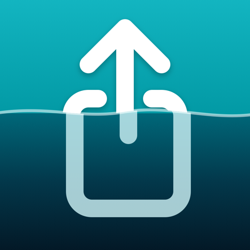

DiveDrop by StrategeaDiveDrop – Privacybeleid / Privacy Policy
Laatst bijgewerkt / last updated: 19 november 2026
Nederlands
Wie. DiveDrop wordt uitgegeven door DIEP CLOUD BV, Pannenhuisstraat 9, 8900 Ieper, België, ondernemingsnummer en btw BE 1038.498.133, onder het merk Strategea. Contact: support@divedrop.app.
Wat DiveDrop doet. DiveDrop leest een duik-exportbestand dat jij deelt met de app (UDDF of FIT, eventueel in een zip), toont de duiken, en stuurt op jouw verzoek de duiken die nog niet in je MySSI-logboek staan naar SSI.
Welke gegevens de app verwerkt. - Je SSI-koppeling. Je koppelt DiveDrop in MySSI zelf: je SSI-wachtwoord tik je alleen bij SSI in, DiveDrop ziet het nooit. SSI geeft de app daarna je SSI-nummer en een toegangssleutel voor DiveDrop, die alleen op je toestel bewaard worden (in de Keychain op iPhone, versleuteld op Android). - De doorgeefdienst op divedrop.app. SSI vraagt dat elke aanvraag ondertekend wordt met de applicatiesleutel van DiveDrop, en die sleutel kan niet veilig in een app zitten. Daarom praat de app met SSI via een kleine doorgeefdienst op divedrop.app (een Netlify Function): die zet de handtekening en geeft je aanvraag en het antwoord van SSI meteen door. Hij bewaart niets: geen SSI-nummer, toegangssleutel, logboek of duikgegevens. - Je duikgegevens uit het exportbestand (datum, tijd, diepteprofiel, temperatuur, GPS van de instapplek, gas, tankdruk, lood, beoordeling, notities). Die blijven op je toestel en worden alleen naar SSI verstuurd wanneer jij op "Verstuur" tikt. - Sync-status (welke duiken al verstuurd of genegeerd zijn, en de gekozen duikstek per duik). Die wordt op je toestel bewaard en, als je iCloud gebruikt, via je eigen iCloud-account gedeeld met je andere toestellen. Op Android zit ze in de Google-back-up van je toestel, als die aanstaat. Wij hebben daar geen toegang toe. - De lijst met SSI-duikstekken komt van SSI's officiële duikstekken-dienst, via divedrop.app, en wordt op je toestel bewaard zodat je een stek kan kiezen. Bij die aanvraag gaan geen persoonsgegevens of duikgegevens mee.
Wat wij niet doen. DiveDrop heeft geen eigen database en geen gebruikersaccounts. Wij verzamelen geen gegevens, gebruiken geen analytics, tonen geen advertenties en volgen je niet. Er wordt niets aan derden verkocht of doorgegeven.
Derden. SSI (HEAD Watersports GmbH) verwerkt de koppeling en je logboek volgens hun eigen privacybeleid. Apple verwerkt iCloud-synchronisatie volgens het privacybeleid van Apple. Netlify draait de doorgeefdienst voor ons, als verwerker. DIEP CLOUD BV is een SSI Accredited App Developer: DiveDrop werkt met MySSI via de officiële API van SSI. Andere vermelde merknamen zijn eigendom van hun respectieve eigenaars.
Verwijderen. Verwijder de app om alle lokale gegevens te wissen. Op Android kan dat ook via Instellingen › Apps › DiveDrop › Opslag › Opslag wissen. Je SSI-account en logboek beheer je bij SSI. Heb je DiveDrop gekoppeld met MySSI, dan trek je die toegang in bij SSI onder MySSI › API-applicaties. Ontkoppelen in de app wist de toegang alleen van je toestel. Sync-status in iCloud wis je op iPhone via Instellingen › Apple-account › iCloud › Beheer opslag. Op Android kan de sync-status in de Google-back-up van je toestel zitten; die beheer of wis je in de Google Drive-app onder Back-ups.
Jouw rechten. Onder de AVG heb je recht op inzage, correctie en verwijdering. Omdat wij geen gegevens van jou bewaren, valt er bij ons niets in te zien of te wissen; mail ons gerust bij vragen.
Français
Qui. DiveDrop est édité par DIEP CLOUD BV, Pannenhuisstraat 9, 8900 Ypres, Belgique, numéro d'entreprise et de TVA BE 1038.498.133, sous la marque Strategea. Contact : support@divedrop.app.
Ce que fait DiveDrop. DiveDrop lit un fichier d'export de plongées que vous partagez avec l'app (UDDF ou FIT, éventuellement dans un zip), affiche les plongées et, à votre demande, envoie à SSI celles qui ne figurent pas encore dans votre carnet MySSI.
Données traitées par l'app. - Votre liaison SSI. Vous liez DiveDrop dans MySSI même : vous saisissez votre mot de passe SSI uniquement chez SSI, et DiveDrop ne le voit jamais. SSI transmet ensuite à l'app votre identifiant SSI et une clé d'accès pour DiveDrop, conservés uniquement sur votre appareil (dans le trousseau sur iPhone, chiffrés sur Android). - Le relais sur divedrop.app. SSI exige que chaque requête soit signée avec la clé d'application de DiveDrop, et cette clé ne peut pas être conservée en sécurité dans une app. L'app communique donc avec SSI via un petit relais sur divedrop.app (une Netlify Function) : il ajoute la signature et transmet aussitôt votre requête et la réponse de SSI. Il ne conserve rien : ni identifiant SSI, ni clé d'accès, ni carnet, ni données de plongée. - Vos données de plongée issues du fichier d'export (date, heure, profil de profondeur, température, GPS du point de mise à l'eau, gaz, pression de bloc, lestage, note, remarques). Elles restent sur votre appareil et ne sont envoyées à SSI que lorsque vous touchez « Envoyer ». - L'état de synchronisation (plongées déjà envoyées ou ignorées, site choisi par plongée). Il est conservé sur votre appareil et, si vous utilisez iCloud, partagé avec vos autres appareils via votre propre compte iCloud. Sur Android, il figure dans la sauvegarde Google de votre appareil si elle est activée. Nous n'y avons pas accès. - La liste des sites de plongée SSI provient du service officiel de sites de plongée de SSI, via divedrop.app, et est conservée sur votre appareil pour pouvoir choisir un site. Cette requête ne contient aucune donnée personnelle ni donnée de plongée.
Ce que nous ne faisons pas. DiveDrop n'a ni base de données ni comptes utilisateurs. Nous ne collectons aucune donnée, n'utilisons pas d'analytics, n'affichons pas de publicité et ne vous suivons pas. Rien n'est vendu ni transmis à des tiers.
Tiers. SSI (HEAD Watersports GmbH) traite la liaison et votre carnet selon sa propre politique de confidentialité. Apple traite la synchronisation iCloud selon la politique de confidentialité d'Apple. Netlify exploite le relais pour notre compte, en tant que sous-traitant. DIEP CLOUD BV est un SSI Accredited App Developer : DiveDrop fonctionne avec MySSI via l'API officielle de SSI. Les autres marques citées appartiennent à leurs propriétaires respectifs.
Suppression. Supprimez l'app pour effacer toutes les données locales. Sur Android, vous pouvez aussi passer par Paramètres › Applications › DiveDrop › Stockage › Effacer le stockage. Votre compte et votre carnet SSI se gèrent chez SSI. Si vous avez lié DiveDrop à MySSI, vous révoquez cet accès chez SSI sous MySSI › Applications API. Délier dans l'app ne supprime l'accès que de votre appareil. Sur iPhone, l'état de synchronisation iCloud se supprime via Réglages › Compte Apple › iCloud › Gérer le stockage. Sur Android, l'état de synchronisation peut figurer dans la sauvegarde Google de votre appareil ; vous la gérez ou la supprimez dans l'app Google Drive, sous Sauvegardes.
Vos droits. En vertu du RGPD, vous disposez d'un droit d'accès, de rectification et d'effacement. Comme nous ne conservons aucune donnée vous concernant, il n'y a rien à consulter ni à effacer chez nous ; écrivez-nous pour toute question.
English
Who. DiveDrop is published by DIEP CLOUD BV, Pannenhuisstraat 9, 8900 Ieper, Belgium, company and VAT number BE 1038.498.133, under the Strategea brand. Contact: support@divedrop.app.
What DiveDrop does. DiveDrop reads a dive export file you share with the app (UDDF or FIT, possibly in a zip), shows the dives, and on your request sends the dives that are not yet in your MySSI logbook to SSI.
Data the app processes. - Your SSI link. You link DiveDrop in MySSI itself: you type your SSI password only at SSI, and DiveDrop never sees it. SSI then gives the app your SSI ID and an access token for DiveDrop, which are stored only on your device (in the Keychain on iPhone, encrypted on Android). - The relay at divedrop.app. SSI requires every request to be signed with DiveDrop's application key, and that key cannot be kept safely inside an app. So the app talks to SSI through a small relay at divedrop.app (a Netlify Function): it adds the signature and passes your request and SSI's answer straight through. It stores nothing: no SSI ID, access token, logbook or dive data. - Your dive data from the export file (date, time, depth profile, temperature, entry-point GPS, gas, tank pressure, weight, rating, notes). It stays on your device and is only sent to SSI when you tap "Send". - Sync state (which dives were sent or ignored, and the chosen dive site per dive). Stored on your device and, if you use iCloud, shared with your other devices through your own iCloud account. On Android it is included in your device's Google backup, if that is turned on. We have no access to it. - The list of SSI dive sites comes from SSI's official dive-site service, through divedrop.app, and is cached on your device so you can pick a site. That request carries no personal or dive data.
What we do not do. DiveDrop has no database and no user accounts of its own. We do not collect data, use analytics, show ads or track you. Nothing is sold or passed on to third parties.
Third parties. SSI (HEAD Watersports GmbH) processes the link and your logbook under its own privacy policy. Apple processes iCloud sync under Apple's privacy policy. Netlify runs the relay for us, as our processor. DIEP CLOUD BV is an SSI Accredited App Developer: DiveDrop works with MySSI through SSI's official API. Other brand names mentioned are the property of their respective owners.
Deletion. Delete the app to remove all local data. On Android you can also use Settings › Apps › DiveDrop › Storage › Clear storage. Your SSI account and logbook are managed at SSI. If you linked DiveDrop with MySSI, revoke that access at SSI under MySSI › API applications. Unlinking in the app only removes the access from your device. On iPhone, iCloud sync state can be removed under Settings › Apple Account › iCloud › Manage Storage. On Android, sync state may be part of your device's Google backup; manage or delete it in the Google Drive app under Backups.
Your rights. Under the GDPR you have the right to access, rectify and erase your data. Because we hold no data about you, there is nothing for us to show or erase; do email us with any question.